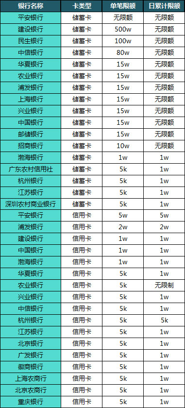
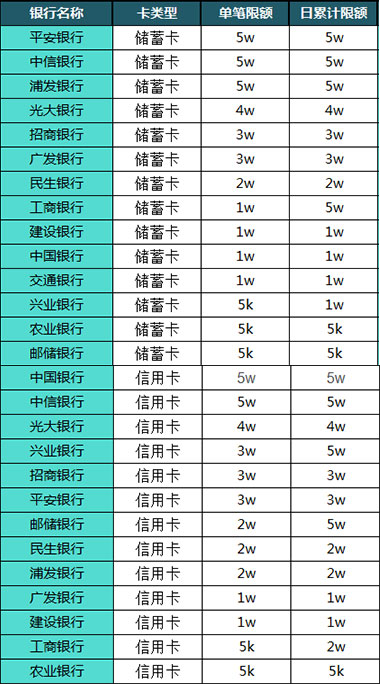

支付方式
*注：由于在集珍坊销售的艺术品绝大多数为孤品，为了满足顾客购买藏品的需求，请您在订购后及时付款，在线支付为实时到帐。请您在订购成功后15分钟内完成支付，否则我们将不会保留您的订单。
集珍坊付款方式主要分为四种：第一种：钱包余额支付；第二种：支付宝；第三种：银行卡支付；第四：微信支付；用户可以根据自己的个人需求和能满足的条件，随意选择四种支付方式。
1、电子钱包支付
用户可先在集珍坊里的电子钱包中进行充值，在购买支付时选择“钱包余额支付”即可进行支付。通过钱包余额支付不要手续费、无使用金额的限制，方便可靠。
2、支付宝
“支付宝”由阿里巴巴集团创办，致力于为中国电子商务提供“简单、安全、快速”的在线支付解决方案，是国内最大的第三方支付平台。它针对网上交易而特别推出安全付款服务，以支付宝为信用中介在买家确认收到藏品前，由支付宝替买卖双方暂时保管货款。您可以选择和支付宝公司合作的“12家银行”中的任意一张银行卡，开通“网上银行”服务，即可完成支付。 支付宝以其在电子商务支付领域先进的技术、风险管控能力赢得银行等合作伙伴的认同。目前已和国内工商银行、农业银行、建设银行、招商银行、上海浦发银行等各大商业银行以及中国邮政、VISA国际组织等各大机构建立了战略合作，成为金融机构在网上支付领域极为信任的合作伙伴，支付宝现在已经拥有超过1亿的会员用户。
具体支付宝直接付款流程
进入“结算中心”→选择支付方式时选择“支付宝”→点击“结算”进入支付宝支付页面完成支付。
温馨提醒：目前各银行对于网上支付均有卡种、金额的限制
各银行限额表如下：

3、银行卡支付详情介绍
我们接入的是平安银行支付网关，支持国内26家银行的借记卡和信用卡：工商银行、光大银行、华夏银行、建设银行、交通银行、民生银行、农业银行、平安银行、浦发银行、上海银行、兴业银行、中国银行、中国邮政储蓄银行、中信银行、广东农村信用社、江苏银行、深圳农村商业银行、渤海银行、招商银行、北京银行、广发银行、徽商银行、上海农商银行、北京农商银行、重庆银行。
温馨提醒：目前各银行对于网上支付均有卡种、金额的限制
各银行限额表如下：

4、微信支付
微信支付是由腾讯公司知名即时通讯服务免费聊天软件微信(Wechat)及腾讯旗下第三方支付平台财付通(Tenpay)联合推出的互联网创新支付产品。有了微信支付，用户的智能手机就成为了一个全能钱包，用户不仅可以通过微信与好友进行沟通和分享，还可以通过微信支付购买合作商户的藏品及服务。
用户只需在微信中关联一张银行卡，并完成身份认证，即可将装有微信app的智能手机变成一个全能钱包，之后即可购买合作商户的藏品及服务，用户在支付时只需在自己的智能手机上输入密码，无需任何刷卡步骤即可完成支付。
已开通接口银行包括中国银行、农业银行、建设银行、招商银行、深圳发展银行、宁波银行、光大银行、中信银行、农业银行、广发银行、平安银行、兴业银行、民生银行等绝大部分银行，其他银行仍在陆续接入中。
温馨提示：
1）一旦绑定成功，该微信号无法绑定其他姓名的银行卡/信用卡，请谨慎操作。
2）同一张银行卡进行绑定，验证信息错误达到三次三小时内将无法操作绑定，可更换其他银行卡绑定操作。
温馨提醒：目前各银行对于网上支付均有卡种、金额的限制
各银行限额表如下：

支付流程
a 未提交订单的支付流程
1）选择满意的藏品在藏品详情页点击“我要购买”进入确认订单的页面，选择支付方式后点击提交订单完成支付
b 通过购物车支付
1）点击导航栏右侧购物车或侧边导航购物车进入购物车页面
2）选择想要购买的藏品点击“去结算”进入确认订单的页面
3）选择支付方式后点击“提交订单”完成支付
c 通过“我的订单”完成支付
1）点击页面右上角手机号码或昵称进入“我的订单”页面，在订单列表页中找到此笔交易，点击“立即支付”弹出支付弹窗进行付款操作。
友情提示：订单只保留15分钟，请在15分钟内完成支付，15分钟结束未完成支付系统将关闭该订单。
2）在“确认支付”窗口可根据自己的需要重新选择支付方式：